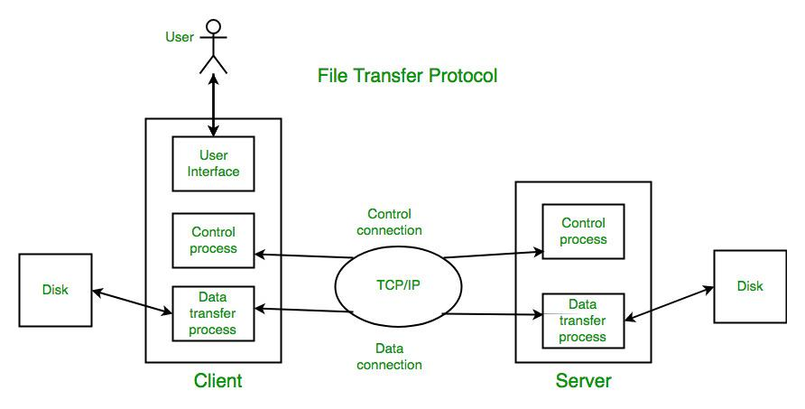

File Transfer Protocol (FTP)

File Transfer Protocol (FTP) is a standard network protocol used to transfer files between a client and a server over a network such as the internet.
FTP allows users to upload, download, delete, and manage files on a remote server. It is commonly used by web developers to upload website files to web servers.
FTP works on a client-server model where the client requests file transfer services and the server responds by sending or receiving files.